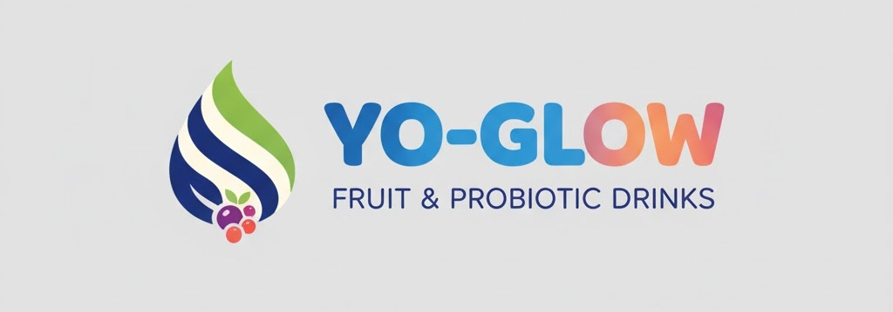
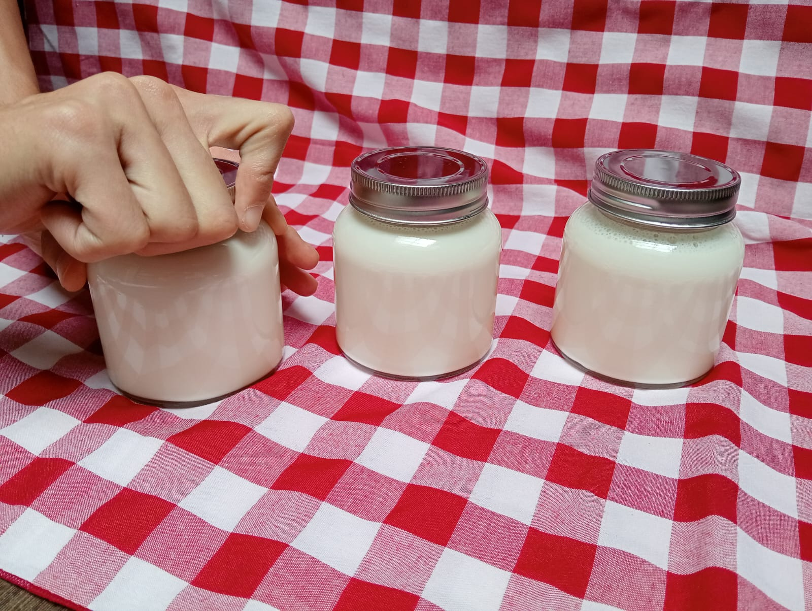
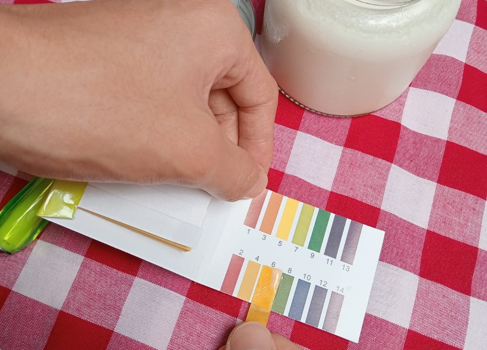
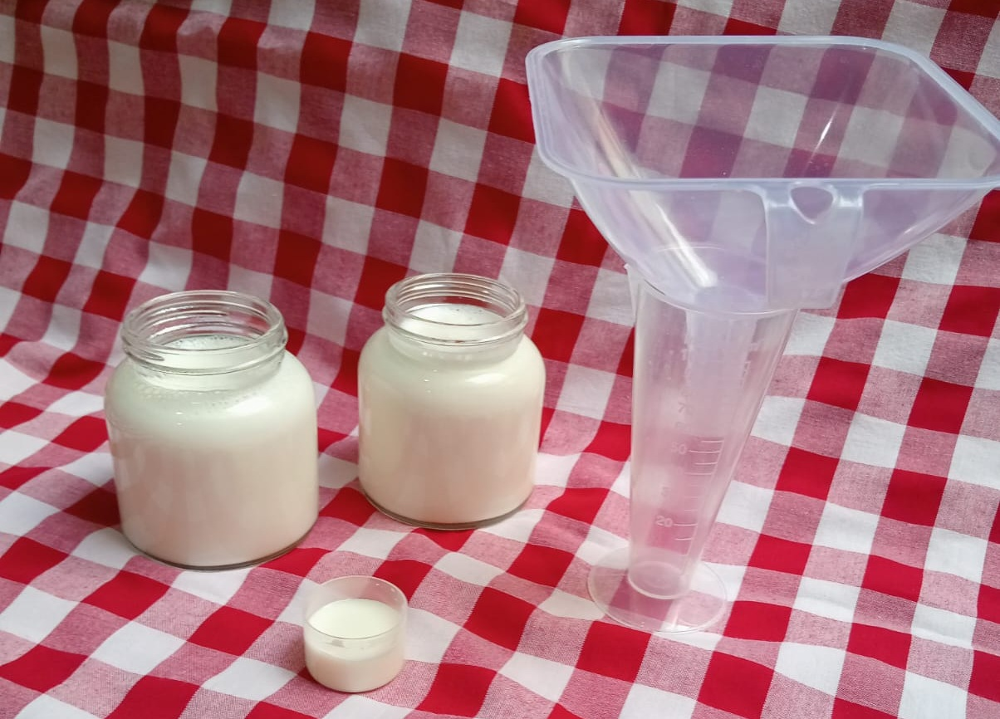

| Alat/Bahan | Jumlah |
|---|---|
| Panci stainless | 1 buah |
| Mangkok kecil | 1 buah |
| Centong | 1 buah |
| Sendok makan | 1 buah |
| Toples kaca (200 mL) | 4 buah |
| Kain tebal | 1 buah |
| Box styrofoam | 1 buah |
| Termometer alkohol (150oC) | 1 buah |
| Greenfield Greek Yoghurt | 80 gr |
| Greenfield Susu UHT | 950 mL |
| Alat/Bahan | Jumlah |
|---|---|
| Indikator pH Universal | 1 set |
| Sendok teh | 1 buah |
| Sampel yogurt | 1 sdt |
| Alat/Bahan | Jumlah |
|---|---|
| Gelas ukur 100 mL | 1 buah |
| Corong plastik (diameter lubang 1,2 cm) | 1 buah |
| Gelas plastik | 2 buah |
| Stopwatch HP | 1 buah |
| Timbangan digital (resolusi 1,0 unit) | 1 buah |
| Sampel yogurt | 1 toples |